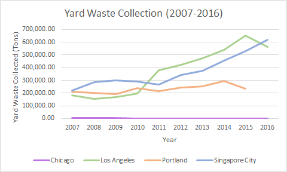
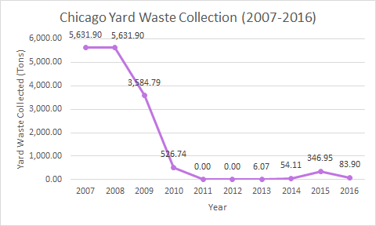

How does Chicago compare
Chicago has been trailing behind in terms of the amount of yard waste that has been collected for the past decade, having recycled at its best only 17% over the past decade. Whereas other cities’ recycling rates continue to rise with every passing year, Chicago is the only city whose rates are constantly in decline. Chicago’s line is flat; this is because although the other three cities’ collection amounts are in the hundred-thousand tons, Chicago’s highest collection of yard waste barely passes 5,500 tons.
Amount of yard waste collected by each city’s sanitation programs from 2007 to 2016.
An in-depth look at Chicago’s yard waste collection over the past decade.
Our method for removing yard waste
The main suggestion that we propose is a system that incorporates Chicago’s old system with its new system. Mimicking the Portland Composts! program, a new yard waste bin will be distributed to all of the households in Chicago. For the peak yard waste season, which we have defined as October through December, a truck sponsored by Republic Services will be sent out to collect all the yard waste on a weekly basis, like the garbage trucks do. These trucks that are used will be the same as the ones that will be used on an on-request basis. For the rest of the months of the year, the yard waste truck will be sent out on an on-request basis, much like the current system.
Requesting a Yard Waste Pickup
The method for requesting yard waste pick-up will also be improved. The current system instructs residents have to call 311 or fill out a tedious online form to have their yard waste picked up. Our suggested method aims to simplify this process. Instead having to call 311 and wait to be serviced by a representative, residents call our number and respond to an automated voice and requires one word commands to place a request. In addition, the website form to be filled out is simplified as well. When the program first rolls out, residents will register in our system and indicate whether they would like only on-demand service of yard waste disposal or, in addition to on-demand service, a weekly pickup service during the peak yard waste season as well.
What we are hoping to achieve
Through the implementation of the Chicago Rakes Up program, we are confident that Chicago will see an increase in the amount of yard waste being collected by its residents. The program that we are proposing implements the the aspects of Chicago’s Blue Cart Recycling Program that works, with some additions to increase the overall collection of yard waste greatly. In addition, residents can now be sure that they are actually recycling their yard waste, since the company that we suggest partnering with, company, has been shown in the past to consistently and safely discard of yard waste.
Download a copy of our propsal